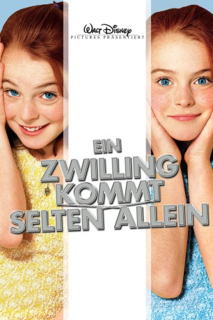

#2909 Ein Zwilling kommt selten allein
Alternativ: The Parent Trap
 
 IMDB-Wertung: 6.5 / 10
IMDB-Wertung: 6.5 / 10  Metascore: 64
Metascore: 64 
US-amerikanische Komödie von Nancy Meyers nach einem Buch von Erich Kästner. Die beiden eineigen Zwillinge Hallie und Annie wuchsen getrennt voneinander auf, da die Eltern sich kurz nach der Geburt haben scheiden lassen. Auf einem Ferienlager treffen sie sich schliesslich zufällig wieder.
Jahr: 1998
Dauer: 120 Minuten
FSK: 0
Land: USA Studio: Buena Vista PicturesTonspuren:
Untertitel:
Auflösung: 720p (1276x716) Größe: 3133 MB
Genre: Drama, Komödie, Abenteuer, Familie, Liebe
Regisseur:  Nancy Meyers
Nancy Meyers
Drehbuch: Erich Kästner, David Swift, Nancy Meyers, Charles Shyer
Soundtrack: Alan Silvestri
Darsteller:
 Lindsay Lohan als Hallie Parker / Annie James
Lindsay Lohan als Hallie Parker / Annie James Dennis Quaid als Nick Parker
Dennis Quaid als Nick Parker- Natasha Richardson als Elizabeth James
- Elaine Hendrix als Meredith Blake
 Lisa Ann Walter als Chessy
Lisa Ann Walter als Chessy Polly Holliday als Marva Kulp, Sr.
Polly Holliday als Marva Kulp, Sr.- Maggie Wheeler als Marva Kulp, Jr.
- Joanna Barnes als Vicki Blake
 Kat Graham als Jackie
Kat Graham als Jackie- Michael Lohan als Lost Boy at Camp
- Katie DeShan als Navajo Bunk Girl
- Natasha Melnick als Girl at Poker Game
- Vendela Kirsebom Thomessen als Bridal Gown Model
 J. Patrick McCormack als Les Blake
J. Patrick McCormack als Les Blake- Troy Christian als QE2 Dancer
- Chéri Ballinger als Blonde Girl at Camp , uncredited
- Andrew Blackall als Volvo Driver , uncredited
 Beau Holden als Valet , uncredited
Beau Holden als Valet , uncredited- Ali Lohan als Child at Airport , uncredited
- Dina Lohan als Woman at Airport , uncredited
- Erin Mackey als Hallie / Annie Acting Double , uncredited
 Simon Kunz als Martin
Simon Kunz als Martin- Ronnie Stevens als Grandfather
- Hallie Meyers-Shyer als Lindsay
- Maggie Emma Thomas als Zoe
- Courtney Woods als Nicole
- Rachel Sullivan als Navajo Bunk Girl
- Brighton Hertford als Navajo Bunk Girl
- Jennifer Lin als Navajo Bunk Girl
- Amy Centner als Navajo Bunk Girl
- Mia Tramz als Navajo Bunk Girl
- Christina Toral als Cell Phone Girl
- Dana Ponder als Cell Phone Girl
- Brianne Mercier als Cell Phone Girl
- Danielle Sherman als Girl at Poker Game
- Amanda Hampton als Girl at Poker Game
- Lisa Iverson als Bugler
- Lisa Cloud als Camp Counselor
- Kellie Foster als Camp Counselor
- Heidi Boren als Camp Counselor
- Marissa Leigh als Fencing Girl
- Heather Wayrock als Fencing Girl
- John Atterbury als Gareth
- Hamish McColl als Photographer
- Alex Cole als Richard
- William Akey als Bellhop with Flowers
- David Doty als Hotel Bartender
- Roshanna Baron als Lady at Pool
- Annie Meyers-Shyer als Towel Girl
- Brian Fenwick als Desk Clerk
Datei: X:\1998\Zwilling kommt selten allein, Ein (1998, FSK0, 1276x716).mkv seit 30.12.2015
Festplatte: HD 1996-2002
 Es gibt insgesamt 86 Filme in der Gruppe '1998'
Es gibt insgesamt 86 Filme in der Gruppe '1998'